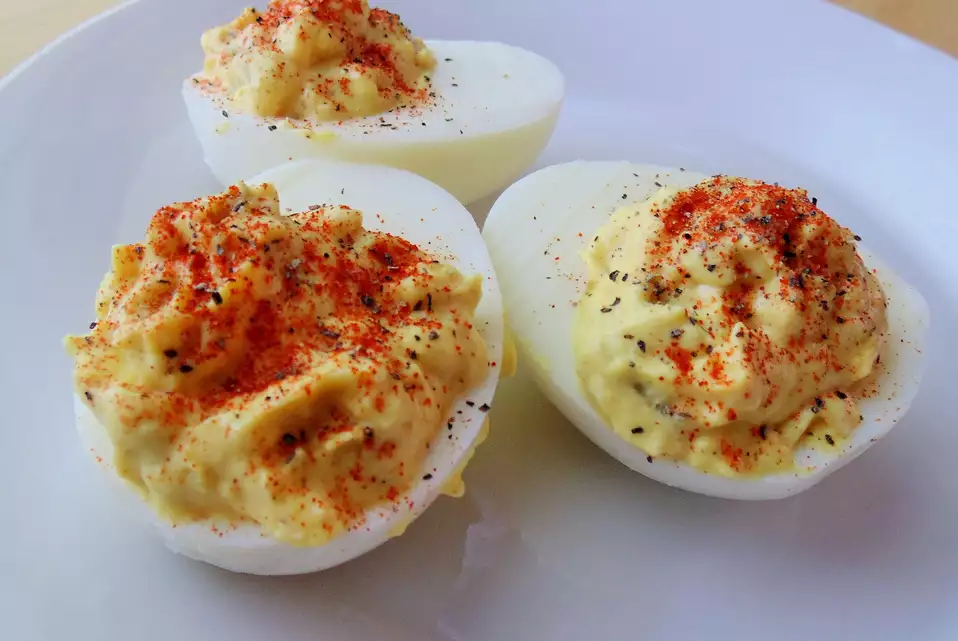

Deviled Eggs

Deviled Eggs
Hello and welcome to Simple Awesome Recipes. Today we will be preparing delicious and easy Deviled Eggs.
Please be sure to check out the recipe below and be sure to subscribe for more awesome recipes daily!
Ingredients
- 6 eggs
- 1/4 C Mayonnaise
- 2 Tbsp finely chooped onion
- 3 Tbsp sweet pickle relish
- 1 Tbsp horseradish
- 1 Tbsp Mustard
- paprika, for garnish
- salt and pepper to taste
Steps
- Place eggs in a medium saucepan and cover with cold water. Bring water to a boil and immediately remove from heat. Cover and let eggs stand in hot water for 10 to 12 minutes. Remove from hot water, cool, peel and cut lengthwise.
- Remove yolks from eggs. In a medium bowl, mash the yolks and mix together with mayonnaise, onion, sweet pickle relish, horseradish and mustard.
- With a fork or pastry bag, fill the egg halves with the yolk mixture. Garnish with paprika, salt and pepper. Chill until serving.